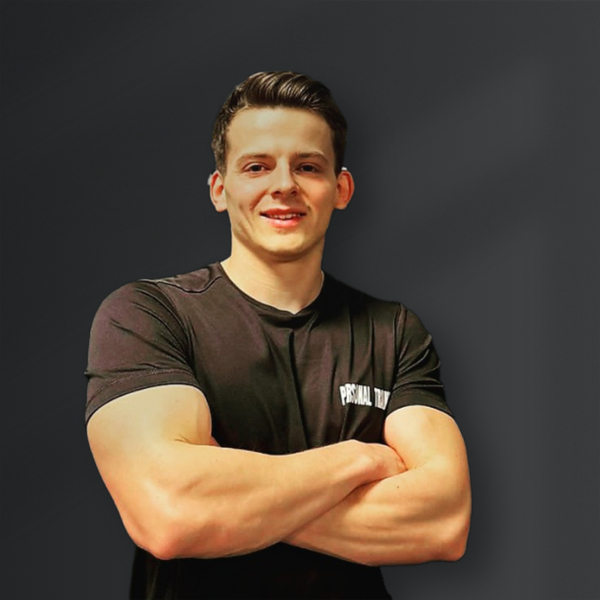
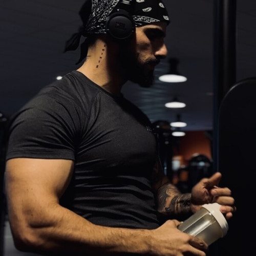

Nos coach
Nos coachs sont à votre disposition lors de vos séances pour répondre à vos questions ou vous consseiller et vous accompagner si vous disposez de l’option nécessaire.

Coach Fitness :
L'incarnation du dynamisme et de la motivation pure, il est bien plus qu'un coach : c’est une véritable source d'énergie et d'inspiration. Avec son regard perçant et son sourire qui dégage une confiance inébranlable, il sait exactement comment vous pousser au-delà de vos limites. Que vous soyez novice ou athlète confirmé, il a ce talent unique pour adapter chaque séance à vos besoins tout en vous challengeant à chaque rep.
Sous sa direction, chaque mouvement devient un pas de plus vers la version la plus forte et la plus épanouie de vous-même. Le coach Ftness n’est pas là pour vous faire transpirer, il est là pour vous transformer. Attendez-vous à des entraînements intenses, où chaque goutte de sueur vous rapproche un peu plus de vos objectifs. Venez vivre l’expérience Jus Suprême Fitness avec lui, où l’effort devient un plaisir, et où chaque progrès vous donne envie d'en faire encore plus.
Coach endurance :
Spécialiste de la course à pied, Coach endurance transforme chaque séance en un défi passionnant. Avec son énergie débordante et son approche personnalisée, elle vous guide, que vous soyez débutant ou coureur expérimenté, pour améliorer vos performances et repousser vos limites.
Elle maîtrise l’art de la course, du travail de la posture à la gestion de la respiration, et sait rendre chaque entraînement aussi motivant qu’efficace. Elle vous apprend à aimer courir, à dépasser vos objectifs et à savourer chaque foulée. À Jus Suprême Fitness, elle vous montre qu’avec la bonne méthode, chaque course devient une victoire.

Coach forme :
Expert des exercices du haut du corps, Coach forme est là pour vous transformer, muscle après muscle. Avec sa maîtrise des mouvements ciblés et sa passion pour la perfection technique, il vous aidera à renforcer votre dos, vos bras, vos épaules et votre poitrine tout en sculptant une silhouette athlétique.
Son approche est précise et dynamique, s’adaptant à votre niveau pour vous faire progresser rapidement tout en vous évitant les blessures. À Jus Suprême Fitness, nos coach forme vous pousse à exploiter tout le potentiel de votre haut du corps avec des séances intensives et motivantes, où chaque répétition devient une étape vers la force et la définition. Avec lui, chaque entraînement devient un pas de plus vers un corps plus fort, plus sculpté et plus puissant.